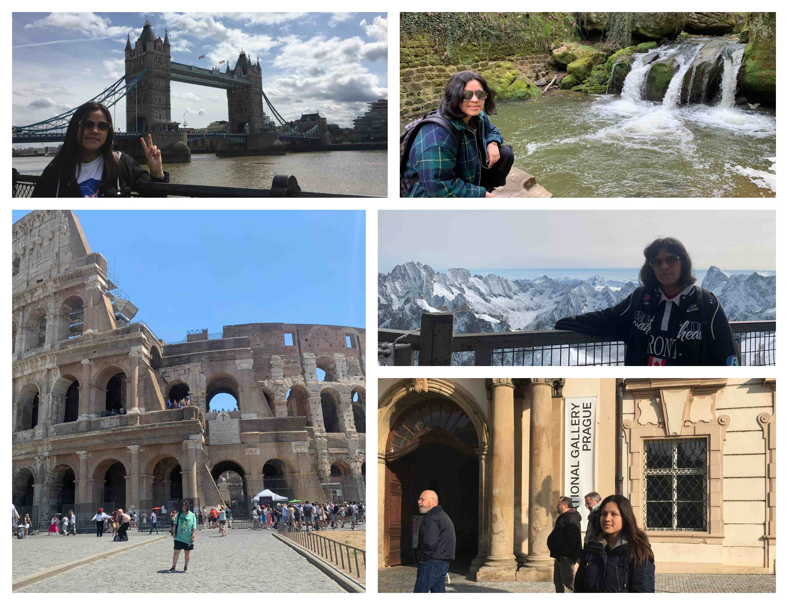
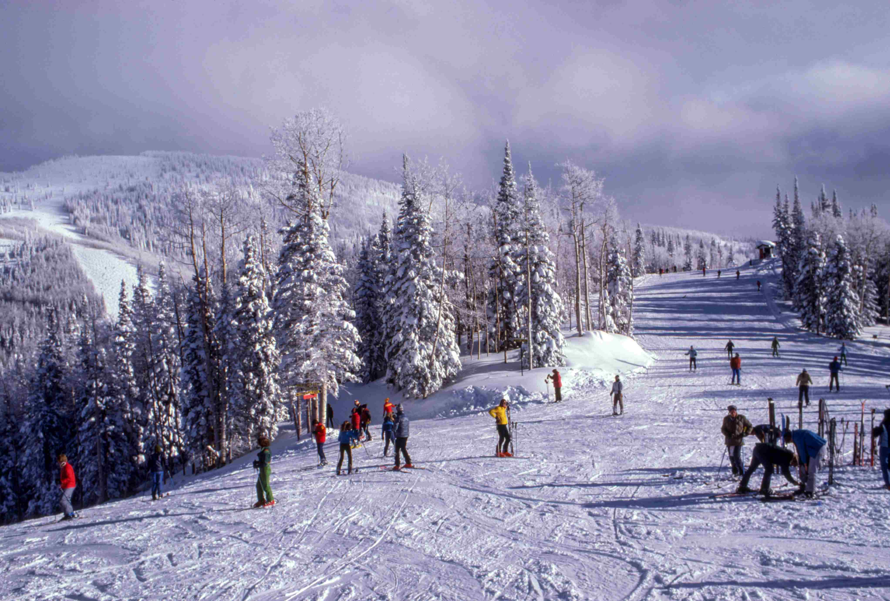
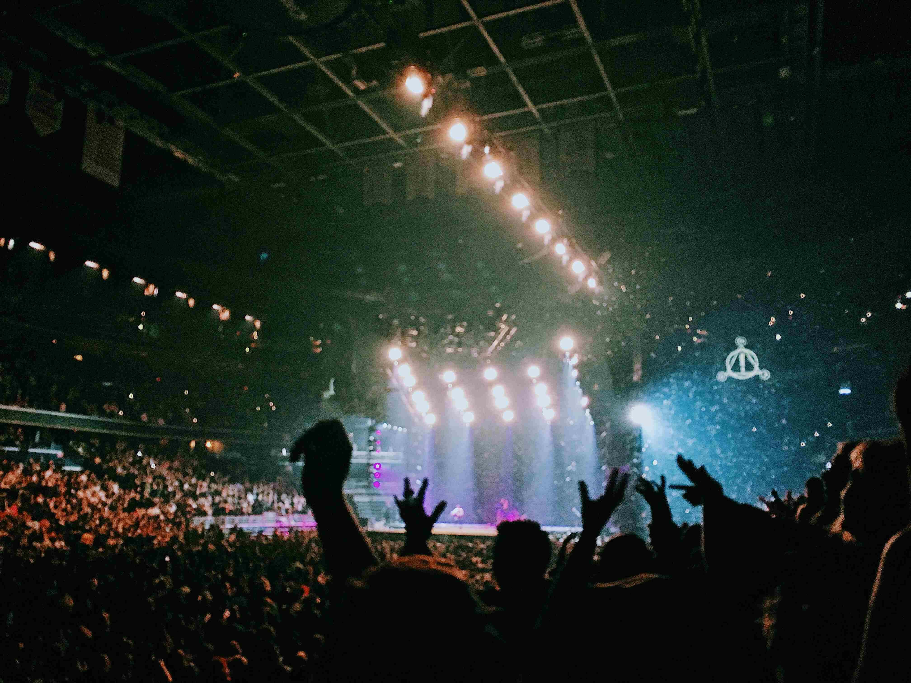
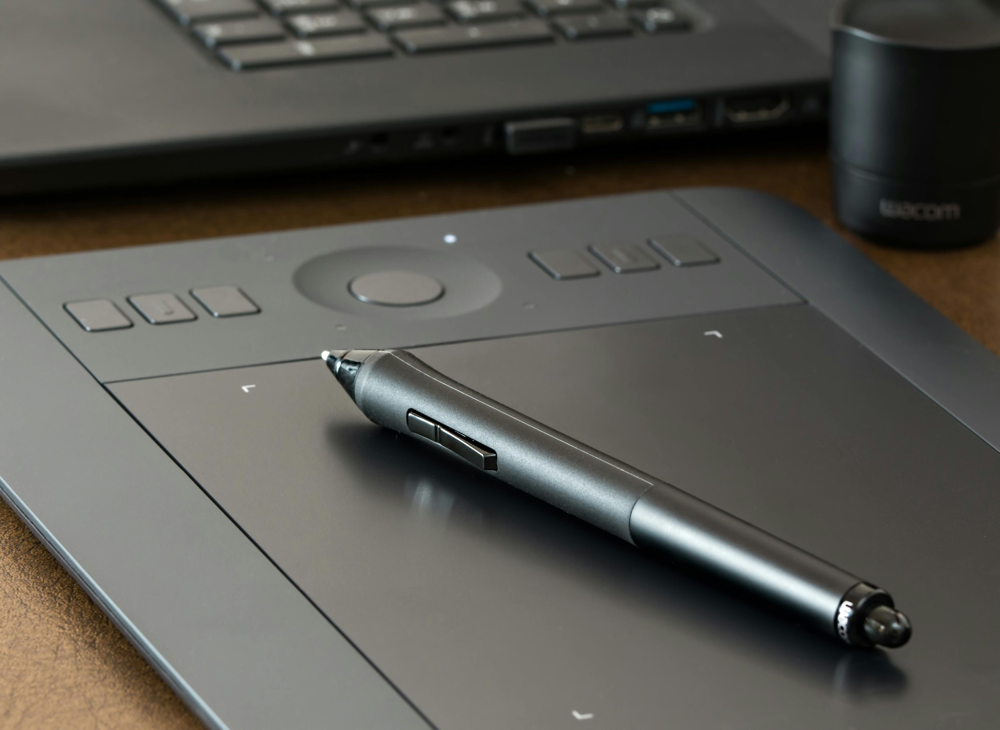
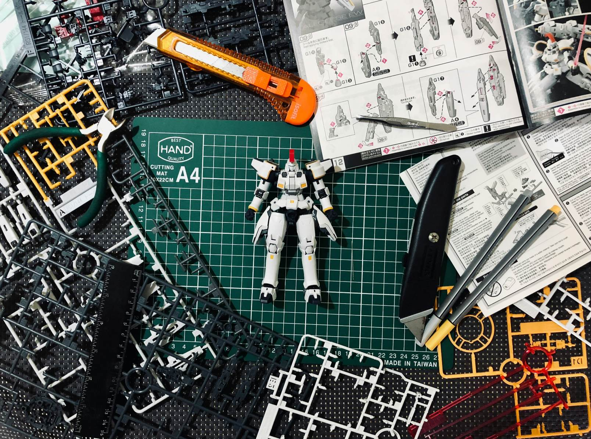
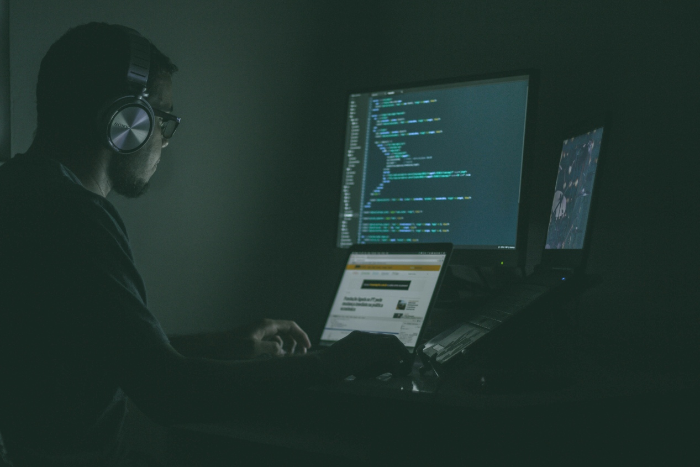

ReizenEen van mijn favoriete bezigheden is reizen. Ik was altijd geïnteresseerd geweest in verschillende culturen en ga dan ook graag naar deze landen om niet enkel bezienswaardigheden te zien, maar ook om cultuur op te doen als het kan. Af en toe spreek ik dan ook eens af met mijn vrienden uit verschillende landen zoals in Groot-Brittannië of Duitsland. Ik heb vooral in Europa rondgereisd, en hoop ook meer Azië te bezoeken. |
 |
|  |
SportPersoonlijk ben ik niet de sportiefste, maar een sport die ik wel graag beoefen zijn wintersporten, vooral skiën en ijsschaatsen zijn leuk. In Oostenrijk heb ik vroeger wel eens een medaille gewonnen voor top 3 tijdens een wedstrijd voor beginners en daar heb ik ook geleerd om te skiën. Verder ben ik ook nog gaan skiën in Noord-Italië, want niets is beters dan skiën bij de bergen in echte sneeuw. Verder zou ik ook wel eens leren snowboarden in de toekomst. |
MuziekVerder ben ik ook graag bezig met muziek. Niet alleen luisteren naar muziek, maar ook het bespelen van muziek. Ik luister naar een breed bereik van muziekgenres, maar mijn favorieten zijn dan toch vooral rock, punk en grunge. (Green Day, Radiohead, MSI…) Reeds heb ik ook een elektrische gitaar gekocht omdat ik het wou leren om zo hopelijk mijn favoriete liedjes te spelen. Zelf vind ik het ook tof om naar concerten te gaan van mijn favoriete muziekartiesten, en zou graag naar meerdere gaan. |
 |
Digital ArtIn mijn vrije tijd speel ik ook vooral games, bouw modelkits, maar teken ik ook al voor meer dan 5 jaar. Ik heb alles zelf moeten leren en bedenk nog steeds over mijn eigen stijl. Het is wel geen realisme dat ik teken en meer in de richting van simpel/anime, af en toe robots en momenteel fanart van mijn favoriete media als een tof tijdsbedrijf en zou graag later in de toekomst merchandise willen maken en verkopen online. |
 |
|  |
ModelbouwZoals eerder kort vermeld ben ik af en toe bezig met het bouwen van modellen. Het gaat vooral specifiek over het bouwen van "gunpla", plastic modellen uit de bekende franchise "Gundam" die afkomstig is van Japan. Men moet veel geduld hebben hiervoor omdat het een lang proces is voordat je klaar bent met een model, en het kan soms dagen lang duren als je er een koopt van grotere schaal. Een andere skill die je kan helpen is oog voor detail, omdat je vaak heel kleine stukjes moet gaan gebruiken of je moet kleine stickers (soms van paar mm groot) plakken. Ik ga nog verder om "panel lining" te doen met speciale inkt voor een meer gedetailleerd eindproduct. |
ProgrammerenNatuurlijk is programmeren ook een interesse voor mij, anders zou ik de richting die ik nu doe (programmeren) niet gekozen hebben. In de toekomst zou ik graag applicaties willen maken, of helpen maken en eventueel ook games, zou het mogelijk zijn. Een toekomstige goal is om hopelijk een simpele game te creëren zoals een visual novel met mijn vriendin, die ook een digital artist en een programmeur is. |
 |